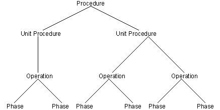

The recipe hierarchy
Using the DeltaV system, you can create master recipes that conform to the industry-standard S88 Procedural model. Each level in the model is created independently and shows the steps in the level below it.

The Recipe Hierarchy
The S88 procedural model defines the following hierarchy of procedural levels:
Procedure - Defines the strategy for accomplishing the task of making a batch. It consists of all of the unit procedures defined for a recipe.
Unit Procedure - Consists of operations that control the function of a single piece of equipment (unit). Multiple unit procedures can run simultaneously on different units.
Operation - Consists of a series of phases. A phase is an individual step in the recipe. For example, MIX, HEAT, and TRANSFER are all phases that might be included in a recipe. By grouping one or more phases in sequential order, you define recipe operations.
Phase - Consists of a series of steps that perform control actions. These actions can interact with control modules or can perform other functions, such as mathematical expressions.
With the DeltaV Batch subsystem, you can create phases, operations, unit procedures, and procedures with DeltaV Explorer. However, you must use Recipe Studio to write or edit the actual recipe.
The recipe levels are created in a bottom-up process, with the phase being the lowest level. Each higher level builds on the one below. This provides for modular, flexible recipe development. Different levels can be combined at different points to create new recipes.
The lowest level in the recipe hierarchy is the phase. The phase links the equipment to the recipe. The phase is associated with either a phase algorithm definition (PAD) or a phase logic module (PLM) through the phase class. Both objects are instances of a phase class, and each contains the logic to operate equipment within a unit. Alone, a phase is not a recipe, but is used as the base level in creating a recipe.
The operation is the next level in the recipe hierarchy. An operation contains an ordered group of steps (or phases). The operation is the most basic recipe that can be created using the DeltaV Batch subsystem.
A unit procedure is an ordered group of operations. The execution path of the operations is determined by the order set in the unit procedure. The operations must already exist in the DeltaV Batch subsystem to create a unit procedure.
A procedure is an ordered group of unit procedures. The execution path of the unit procedures is determined by the order set in the procedure. The unit procedures must already exist in the DeltaV Batch subsystem to create a procedure.
In addition to containing recipe logic, each level also acts as a repository for parameters for the steps it calls. These can be set, requested of the operator, or deferred to a formula at the next level. The lowest (operation) recipe level, therefore, can be used to set key parameters for phase classes. Key parameters are always batch input parameters. Where phase logic is similar, it is best to differentiate by using parameters that are set at the operation level rather than to use different phase classes. In addition, you can use results of phase logic at the operation level. For example, you can write an operation that calls the ADD, MIX, and ANALYZE phases in a loop and completes only when the analysis meets recipe criteria. Operations provide a set of building blocks for the higher two levels of recipes.
Ideally, the middle (unit procedure) level of recipe contains most of the processing logic at the unit level. Interactions between processes that involve more than one unit can be managed with phase-to-phase messages. In order to allow design of straightforward equipment arbitration, processing in each unit should be confined to either one or a small set of consecutive unit procedures (for example, R1_TRANSFER_IN, R1_REACT, R1_TRANSFER_OUT).
The primary task of the highest recipe level (procedure) is to define the logic that manages overall interactions between units. Where there is logic that requires a high level of interaction between phases, it is best to use phase-to-phase messages using phase request codes rather than procedure-level logic transitions.
Recipe development is done using Recipe Studio.